Paint
Description
Paints your image using Black/White, Blur, Clone, Color, Eraser, Mosaic, Red-Eye, Repair and Scatter brushes.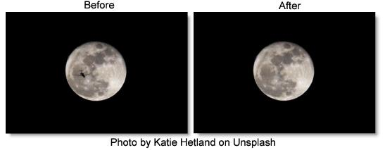
Category
Image.
Brushes
When Paint is selected in the Filter window, it’s controls appear in the Toolbar.
Black/White (B)
The Black/White brush converts color images to black and white simulating the look of Black and White photographic filters.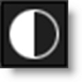
Mode
Selects the method by which the color image is converted to a monochrome image.
Luminance
Creates a monochrome image using the brightness of the image.
Average
Creates a monochrome image using the average of the red, green and blue channels.
Red
Simulates a red filter in black and white photography.
Green
Simulates a green filter in black and white photography.
Blue
Simulates a blue filter in black and white photography.
Yellow
Simulates a yellow filter in black and white photography.
Orange
Simulates a orange filter in black and white photography.
Blur (Shift+B)
Blurs the image.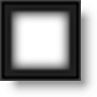
Amount
Sets the amount of blur to be applied.
Clone (C)
Paints the image using another part of the image.
Using the Clone brush:
1 Select the Clone brush in the Toolbar.
2 Press and hold down the Shift key.
3 Click, drag and release to set the clone offset.
The first click sets the clone source and where you drag and release is the clone destination.
4 Use your pen and tablet or mouse to paint with the Clone brush.
To quickly reset the clone offset:
• Press shift and without moving the cursor, click your mouse or tap your pen on the screen once.
The clone offset is quickly reset.
Nudging the Clone Source
The Clone source can be nudged using the Arrow keys. One press of the Arrow key moves the Clone source 1 pixel. Using the Shift key in conjunction with the Arrow keys moves the Clone source 10 pixels.
Color (Shift+C)
Paints the image with the current color.
Color
Displays the currently selected color. Clicking on the Color icon opens a standard color picker.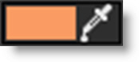
Eyedropper
Colors can be picked off of the screen using the eyedropper icon.
Mode
Selects how color is applied to the image.
Normal
The current color is added to the image.
Tint
The current color is used to tint the image by replacing hue and saturation.
Hue
The current color is used to tint the image by only replacing hue.
Lighten
Pixels darker than the paint color are replaced, and pixels lighter than the paint color do not change.
Darken
Pixels lighter than the paint color are replaced, and pixels darker than the paint color do not change.
Eraser (E)
Erases previously painted brush strokes.
Painting with the right-mouse button automatically paints with the Eraser brush.
Mosaic (Shift+M)
Divides the picture up into square tiles.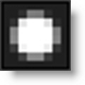
Size
Controls the size of the square tiles. A small size value will create many square tiles.
Red-Eye (R)
Removes red-eye.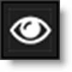
To remove red-eye:
1 Select the Red-Eye brush in the Toolbar.
2 Use Ctrl(Win) or Cmd(Mac) and drag in or out to size the brush to roughly match the size of the red pupil.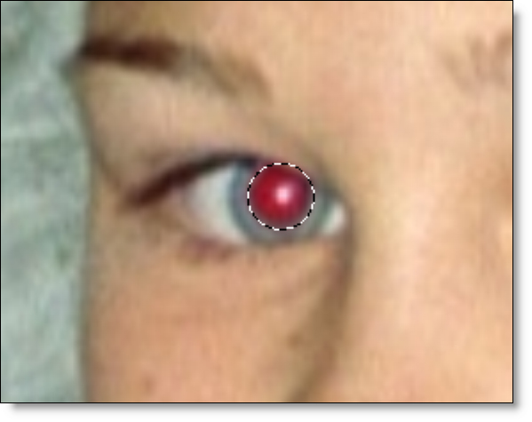
3 Paint in the area of the red pupil being careful not to paint on any skin areas.
Repair (Shift+R)
Paints the image with the color level sampled at the beginning of each stroke.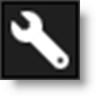
Scatter (S)
Scatters pixels in a random fashion.
Radius
Sets the amount of scattering.
Brush Settings
Customize your brush using the following settings:
Profile
The profile setting controls the shape of the brush.
Circle
The brush profile is set to a circular shape.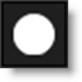
Square
The brush profile is set to a square shape.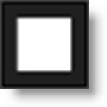
Size
Sets the size of the brush.
To set the brush size:
1 Click and drag on the Brush Size number field.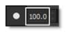
or
2 Click on the Brush Size number field, enter a value and hit Enter.
or
3 Resize the brush in the Viewer by holding Ctrl/Cmd and dragging in or out.
Softness
Sets the brush softness.
To set the brush softness:
1 Click and drag on the Brush Softness number field.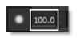
or
2 Click on the Brush Softness number field, enter a value and hit Enter.
Opacity
Sets the brush opacity.
To set the brush opacity:
1 Click and drag on the Brush Opacity number field.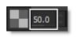
or
2 Click on the Brush Opacity number field, enter a value and hit Enter.
Paint Keyboard Shortcuts
Shortcut | Action |
|---|---|
B | Selects the Black/White brush |
Shift+B | Selects the Blur brush |
C | Selects the Clone brush |
Shift+C | Selects the Color brush |
E | Selects the Eraser brush |
Shift+M | Selects the Mosaic brush |
R | Selects the Red-Eye brush |
Shift+R | Selects the Repair brush |
S | Selects the Scatter brush |
Ctrl/Cmd+drag | Sizes the brush |
[ ] | Sizes the brush |
Shift with clone brush | Sets the clone offset |
Shift+click or tap | Resets the clone offset |
Arrow keys | Moves the Clone source by 1 pixel |
Shift+Arrow keys | Moves the Clone source by 10 pixels |
Hold down Arrow keys | Moves the Clone source continuously |
Right-mouse drag | Paints with the Eraser brush |